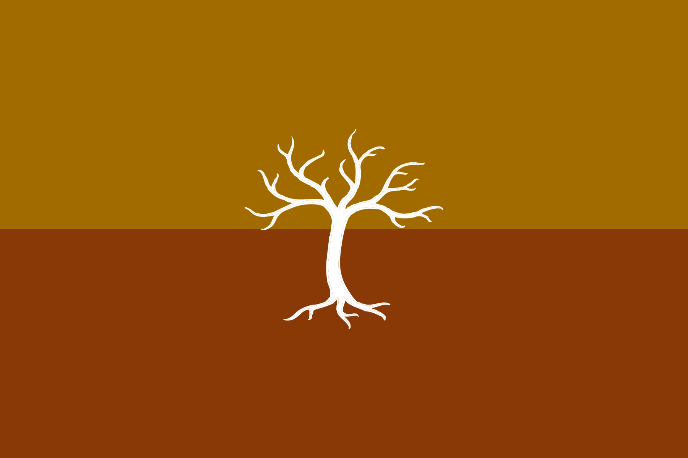

@rotting_sweet

Yggdrasil


Alfheim est un territoire bordé de toutes parts d'îles.
Son rivage est peu profond et son climat extrêmement doux lui confère une atmosphère paisible et rassurante.
Néanmoins, il y fait très humide et à certains endroits, la terre est même marécageuse.
De nombreuses forêts prolifèrent sur ce territoire, dont la Forêt Sainte de Vhenadahl, où la moindre goutte de sang qui y est versée est vu comme un outrage incommensurable envers les dieux de la Forêt, mais également envers la société elle-même dans son intégralité.
Ses saisons y sont clémentes, alternant entre une saison des pluies, et une saison chaude.
La population vivant en ce pays est dénommée les Ithils, des créatures décrites comme des possesseurs de sang "pur".
Parmis ces Ithils, on peut retrouver notamment des Anges, des Elfes, des Nymphes, des Fées, des Harengons, des Grungs, et des Centaures.
Leur société est hiérarchisée selon l'espèce, où les Anges dominent et peuvent donc accéder en plus grande quantité et plus facilement à des postes hauts gradés et à responsabilités, mais est également monarchique et matriarcale.
Leur Reine, Reana Hlapenya, est une femme Ange décrite comme d'une grande sagesse et d'une bienveillance inégalée envers son peuple.
Bien qu'elle apprécie particulièrement cette réputation, elle se révèle très belliqueuse et conservatrice.

La population parle une langue qui leur est propre : la langue Ithilienne.
Le mélange de culture entre les différents pays étant extrêmement mal vu, et plus spécialement encore entre les Ithils et les Naeths, habitants de Dùath, aucune autre créature qu'un natif d'Alfheim ne peut parler ou même étudier cette langue.
Un autre langage réside néanmoins sur Alfheim.
Le langage de la Forêt, qui est un genre de patois, est parlé par les Nymphes, les Fées, les Grungs et les Harengons -les Créatures des Bois-.
L'existence de cette langue remonte à une époque précédant l'unification des peuples connus désormais comme les Ithils et donc avant l'existence même d'Alfheim.
Certains disent que la maîtrise de ce langage permet de comprendre le vent, d'entendre les arbres parler, les ruisseaux chuchoter et les plantes fredonner.
Ainsi, les Créatures des Bois prient et servent les dieux de la Nature, les protègent, et les écoutent.
Puisque Alfheim ne considère pas de religion nationale, chaque espèce a ses croyances, ses dieux, ses prières et ses superstitions.
Les Elfes, par exemple, ne croient en aucune religion.
Les croyances sont vues comme des jeux enfantins, ne servant qu'à se rassurer de l'absurdité de l'existence.
En effet, les Elfes sont assez nihilistes.
Les Anges, quant à eux, idolâtrent et servent bel et bien des Dieux : eux-même.
Leur confiance en eux n'a d'égal que leur leur arrogance, et même si certains s'éloignent parfois de cette réalité, ils sont le plus souvent chassés ou emprisonnés, pour ne pas tâcher la réputation des Dieux.